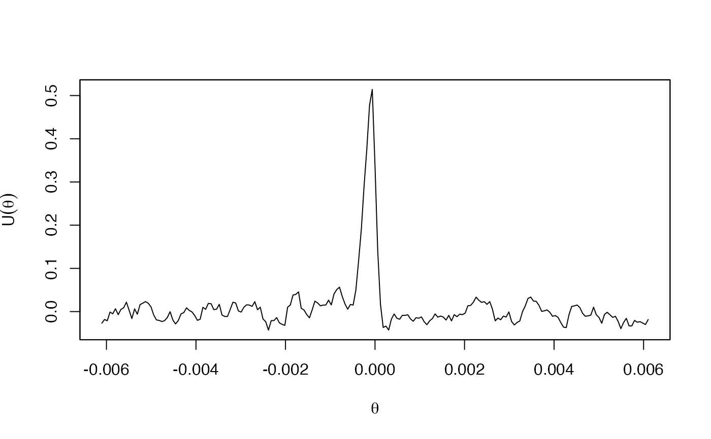

wllag.RdThis function estimates lead-lag parameters on a scale-by-scale basis from non-synchronously observed bivariate processes, using the estimatiors proposed in Hayashi and Koike (2018b).
wllag(x, y, J = 8, N = 10, tau = 1e-3, from = -to, to = 100,
verbose = FALSE, in.tau = FALSE, tol = 1e-6)
a zoo object for observation data of the first process.
a zoo object for observation data of the second process.
a positive integer. Scale-by scale lead-lag parameters are estimated up to the level J.
The number of vanishing moments of Daubechies' compactly supported wavelets. This should be an integer between 1 and 10.
the step size of a finite grid on which objective functions are evaluated. Note that this value is identified with the finest time resolution of the underlying model.
The default value 1e-3 corresponds to 1 mili-second if the unit time corresponds to 1 second.
a negative integer. from*tau gives the lower end of a finite grid on which objective functions are evaluated.
a positive integer. to*tau gives the upper end of a finite grid on which objective functions are evaluated.
a logical. If FALSE (default), the function returns only the estimated scale-by-scale lead-lag parameters. Otherwise, the function also returns some other statistics such as values of the signed objective functions. See `Value'.
a logical. If TRUE, the estimated lead-lag parameters are returned in increments of tau. That is, the estimated lead-lag parameters are divided by tau.
tolelance parameter to avoid numerical errors in comparison of time stamps. All time stamps are divided by tol and rounded to integers. A reasonable choice of tol is the minimum unit of time stamps. The default value 1e-6 supposes that the minimum unit of time stamps is greater or equal to 1 micro-second.
Hayashi and Koike (2018a) introduced a bivariate continuous-time model having different lead-lag relationships at different time scales. The wavelet cross-covariance functions of this model, computed based on the Littlewood-Paley wavelets, have unique maximizers in absolute values at each time scale. These maximizer can be considered as lead-lag parameters at each time scale. To estimate these parameters from discrete observation data, Hayashi and Koike (2018b) constructed objective functions mimicking behavior of the wavelet cross-covariance functions of the underlying model. Then, estimates of the scale-by-scale lead-lag parameters can be obtained by maximizing these objective functions in absolute values.
If verbose is FALSE, a numeric vector with length J, corresponding to the estimated scale-by-scale lead-lag parameters, is returned. Note that their positive values indicate that the first process leads the second process.
Otherwise, an object of class "yuima.wllag", which is a list with the following components, is returned:
the estimated scale-by-scale lead-lag parameters. The \(j\) th component corresponds to the estimate at the level \(j\). A positive value indicates that the first process leads the second process.
the values of the objective functions evaluated at the estimated lead-lag parameters.
a list of values of the objective functions. The \(j\) th component of the list corresponds to a zoo object for values of the signed objective function at the level \(j\) indexed by the search grid.
the lead-lag parameter estimate in the sense of Hoffmann, Rosenbaum and Yoshida (2013).
the correltion coefficient in the sense of Hoffmann, Rosenbaum and Yoshida (2013), evaluated at the estimated lead-lag parameter.
a zoo object for values of the cross correltion function in the sense of Hoffmann, Rosenbaum and Yoshida (2013) indexed by the search grid.
Hayashi, T. and Koike, Y. (2018a). Wavelet-based methods for high-frequency lead-lag analysis, SIAM Journal of Financial Mathematics, 9, 1208–1248.
Hayashi, T. and Koike, Y. (2018b). Multi-scale analysis of lead-lag relationships in high-frequency financial markets. doi:10.48550/arXiv.1708.03992 .
Hoffmann, M., Rosenbaum, M. and Yoshida, N. (2013) Estimation of the lead-lag parameter from non-synchronous data, Bernoulli, 19, no. 2, 426–461.
Smaller levels correspond to finer time scales. In particular, the first level corresponds to the finest time resolution, which is defined by the argument tau.
If there are multiple maximizers in an objective function, wllag takes a maximizer farthest from zero (if there are two such values, the function takes the negative one). This behavior is different from llag.
The objective functions themselves do NOT consitently estimate the corresponding wavelet covariance functions. This means that values in obj.values and obj.fun cannot be interpreted as covaraince estimates (their scales depend on the degree of non-synchronicity of observation times).
## An example from a simulation setting of Hayashi and Koike (2018b)
set.seed(123)
# Simulation of Bm driving the log-price processes
n <- 15000
J <- 13
tau <- 1/2^(J+1)
rho <- c(0.3,0.5,0.7,0.5,0.5,0.5,0.5,0.5)
theta <- c(-1,-1, -2, -2, -3, -5, -7, -10) * tau
dB <- simBmllag(n, J, rho, theta)
Time <- seq(0, by = tau, length.out = n) # Time index
x <- zoo(diffinv(dB[ ,1]), Time) # simulated path of the first process
y <- zoo(diffinv(dB[ ,2]), Time) # simulated path of the second process
# Generate non-synchronously observed data
x <- x[as.logical(rbinom(n + 1, size = 1, prob = 0.5))]
y <- y[as.logical(rbinom(n + 1, size = 1, prob = 0.5))]
# Estimation of scale-by-scale lead-lag parameters (compare with theta/tau)
wllag(x, y, J = 8, tau = tau, tol = tau, in.tau = TRUE)
#> [1] -1 -1 -2 -2 -3 -6 -4 -9
# Estimation with other information
out <- wllag(x, y, tau = tau, tol = tau, in.tau = TRUE, verbose = TRUE)
out
#> Estimated scale-by-scale lead-lag parameters
#> [1] -1 -1 -2 -2 -3 -6 -4 -9
#> Corresponding values of objective functions
#> [1] 0.05032269 0.28680568 1.21135760 1.83362493 2.22302095 2.21532720 2.86644036
#> [8] 2.78802974
#> Estimated lead-lag parameter in the HRY sense
#> [1] -1
#> Corresponding correlation coefficient
#> [1] 0.51416
# Plot of the HRY cross-correlation function
plot(out$ccor.hry, xlab = expression(theta), ylab = expression(U(theta)))

dev.off()
#> null device
#> 1
# Plot of the objective functions
op <- par(mfrow = c(4,2))
plot(out)
par(op)